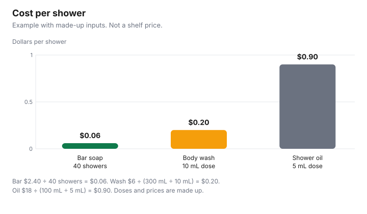

Personal Care · Canada
Bar Soap vs Body Wash vs Shower Oil: Cost per Shower
Body wash disappears faster than the bottle suggests, because the dose is whatever comes out when you squeeze. A bar disappears in the dish if it sits in water, and a shower oil can be a few cents or most of a dollar depending on how much you pour. The comparison that matches the bill is cost per shower: price divided by showers, from a count you keep, or from millilitres divided by a dose you measure. This page is that method for bar soap, body wash, and shower oil. No shelf price is quoted. Nothing here ranks a brand or tells you what your skin needs.
Key takeaways
- Bar: price ÷ showers you count. Wash or oil: price ÷ (millilitres ÷ your dose).
- Example with made-up inputs: a $2.40 bar over 40 showers is $0.06. A $6 wash, 300 mL at 10 mL, is $0.20. An $18 oil, 100 mL at 5 mL, is $0.90.
- Hypoallergenic is not a promise. Health Canada says the word is not a legal or scientific term, and a reaction is still possible.
- A store brand can win on grams and on cost per shower. This page does not say it feels the same.
- One bar per person keeps the count honest. A shared bottle needs one agreed dose.
Cost per shower measurement
A bar is the easier count and the harder waste problem. Pay the price, use one bar, and mark each shower until it is gone. Divide price by that number. The first bar is the measurement for later bars of the same product, until the season or the size of the bar changes. Do not divide by a number printed in an advertisement. If the bar breaks and a piece goes down the drain, that shower count stops early, and the cost per shower goes up. That is the correct result. The lost piece was not free.
A wash or an oil starts from the metric net quantity on the label. Cosmetic labelling, checked 29 Sep 2026, requires that quantity in metric units. Measure one shower’s worth once, with a spoon, not by eye on a rushed morning. Divide millilitres by that dose. Divide the price by the number of showers. If two people share the bottle and one pours twice as much, you do not have one household dose. You have two. Write both down or the average will flatter the person who pours less. Price per 100 mL, as on the unit-price guide, tells you whether the bottle is a fair size. It does not tell you the squeeze. The four-banner sheet is where the sticker comparison can live once the dose is known.
| Form | How to divide | Example | Per shower |
|---|---|---|---|
| Bar soap | Price ÷ showers you count | $2.40 over 40 showers | $0.06 |
| Body wash | Price ÷ (mL ÷ dose) | $6, 300 mL, 10 mL dose, 30 showers | $0.20 |
| Shower oil | Price ÷ (mL ÷ dose) | $18, 100 mL, 5 mL dose, 20 showers | $0.90 |
| Your bottle | Same division, your dose | Write the label’s millilitres | Price ÷ your showers |
Skin type considerations
Cost and comfort are different questions. This guide does not cite a dermatology trial of bar soap, body wash, or shower oil, and it will not say that oil is the right answer for dry skin or that every bar is harsh. Health Canada’s advertising page says “hypoallergenic” is not a legal or scientific term. It means the maker chose ingredients thought less likely to cause an allergy. It does not mean the product will not cause one. There are no non-allergenic cosmetics, in that page’s words. If you know an ingredient that bothers you, read the INCI list. If the directions say to do a patch test, the cosmetics-safety page tells you how: a small amount on the inner forearm or behind the ear, wait 24 hours, wash gently, and do not continue if the skin is red, itchy, burning, or blistering.
Sensitive skin, a rash, or a product that stings is a reason to stop and ask a pharmacist, not a reason to hunt for the lowest cost per shower. A therapeutic claim, such as treating a skin condition, belongs on a drug or a natural health product with a DIN or an NPN, not on an ordinary cosmetic. Doubt that claim when the number is missing. The short routine guide is the cleanser and moisturiser around the shower, not a diagnosis. This page is education, not medical advice.
Store brands
A store-brand bar or wash is a fair switch to test when you are comparing grams or millilitres, the ingredient list, and the cost per shower after you have used one package. It is not a fair switch to declare identical. The store-brand toiletries guide is that comparison for the bathroom shelf, including soap and body wash as rows where size and ingredients are the shopping facts. Buy one, on a size you will finish, and keep the receipt. If you dislike it, the cost of the test is one package, not a case.
Do not let a store brand’s low sticker skip the dose. A cheaper wash that you pour more generously can cost more per shower than a name brand you use sparingly. Measure both, or you will “save” on a bottle and spend it in the squeeze. No banner is ranked. A warehouse bottle is the same test with more millilitres at risk if you will not finish it.
Making bars last
The bar’s enemy is the dish. Water left under the bar softens it, and the soft soap stays in the dish instead of on you. Let the bar drain. Keep it out of the direct stream. Use a dish that does not hold a pool, if you have one. This guide does not cite a brand of dish or a measured percent of longer life, so it does not offer one. The gain is the showers that no longer melt away between uses. Cut a large bar in half only if you will use both halves. A half forgotten in a wet corner is waste with a knife.
Close a wash bottle. A pump left open in a steamy room is the warm, damp storage Health Canada’s advertising page warns about for cosmetics generally. Do not thin a wash with water to stretch it. The safety page says not to add water to dilute makeup, and a wash you water down is no longer the product you measured. If the bottle is empty, it is empty. Replace it and start the count again.
Family sizes
A shared bar makes a nonsense of the count, because you cannot see who used it. Give each person a bar, or accept that the household figure is an average and will not explain why the bar vanished. A shared wash is easier to share and harder to dose. Agree on one measurement, or write two. Children often use less, and teenagers often use more. The adult 10 mL in the example is not a child’s dose and not a rule.
Example with made-up inputs, continued. Four people, each showering once, at the example’s bar cost of $0.06, is $0.24 for that round of showers. The same four people on the example’s oil, at $0.90 each, is $3.60. Over 30 such rounds the bar example is $7.20 and the oil example is $108. That gap is arithmetic inside the example, not a finding about your family and not a reason to ignore skin that needs something other than the cheapest bar. Replace 4, 30, and the per-shower figures with your own. A guest bathroom bar that no one finishes is a separate small cost. Buy the small bar, not four bars you will not finish. Buy the size you will finish.

Sources & date stamps
- Health Canada, Labelling of cosmetics, checked 29 Sep 2026. Metric net quantity is required, in English and French, along with identity, ingredients, dealer details, warnings, and safe-use directions.
- Health Canada, Cosmetic advertising, labelling and ingredients, checked 29 Sep 2026. Hypoallergenic is not a legal or scientific term. Therapeutic claims need a DIN or an NPN. Warm, damp storage is described as a problem for preservatives.
- Health Canada, Use cosmetics safely, checked 29 Sep 2026. Patch-test steps. Do not add water or saliva to dilute makeup. Stop if smell, colour, or feel changes.
- This guide quotes no shelf price for soap, wash, or oil. The table and the chart are an example with made-up inputs.
Frequently asked questions
Is bar soap cheaper than body wash?
It is cheaper per shower only when your count says so. In the example with made-up inputs, a $2.40 bar over 40 showers is $0.06 and a $6 wash of 300 mL at 10 mL a shower is $0.20, and those are not shelf prices. A bar you replace every week because it sits in water can lose to a wash you measure. Run your own count before you switch the household.
How do I work out cost per shower?
For a bar, divide the price by the showers you count until it is gone. For a wash or an oil, divide the millilitres by the amount you pour, then divide the price by that number of showers, using a spoon once so the dose is a measurement. Price per 100 mL checks the bottle size. Cost per shower includes how hard you pour.
Is shower oil worth it for dry skin?
This guide does not cite a clinical comparison, so it cannot say an oil is worth it for dry skin. In the made-up example, oil is $0.90 a shower and the bar is $0.06, and if your skin feels better with the oil, that comfort is your reason for paying it. If skin is sore or reacting, ask a pharmacist. This is not medical advice.
Does bar soap dry out skin?
This page does not cite a study that answers that for every bar and every person. Health Canada says a product labelled hypoallergenic can still cause a reaction, and that the word is not a legal or scientific term. If a bar leaves skin tight or itchy, stop and try a different ingredient list, or ask a pharmacist. Cost per shower does not tell you how your skin will feel.
How do I make a bar last?
Keep it out of a puddle, let it drain, and do not leave it under the shower stream, because soap that dissolves in the dish is showers you paid for and did not get. This guide does not cite a certain dish or a percent of extra life. One bar in use, not three melting beside the tap, is the practical version.